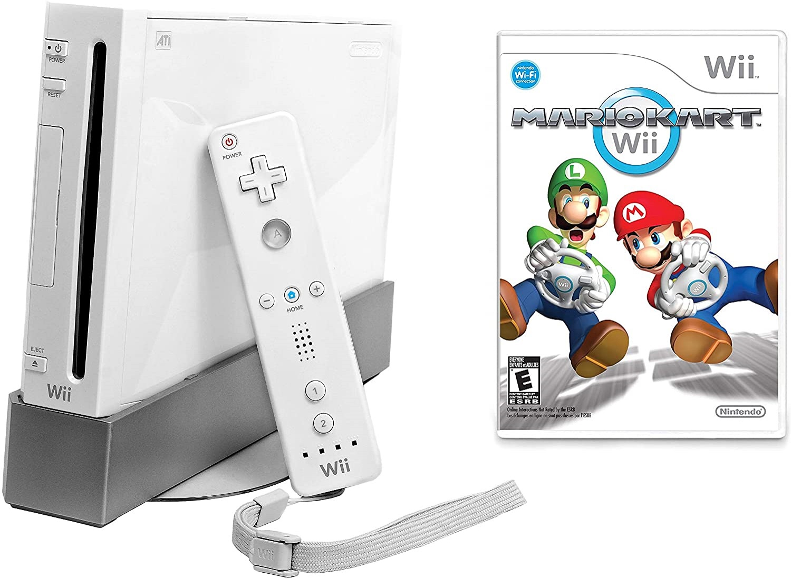
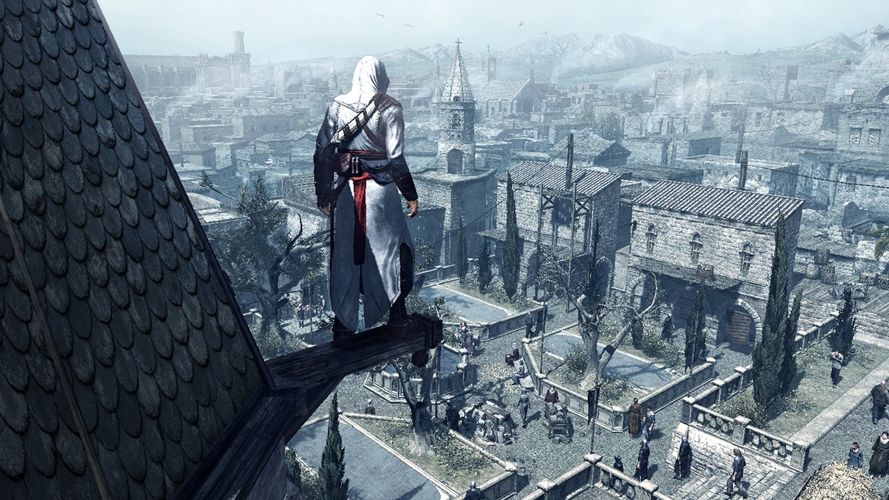
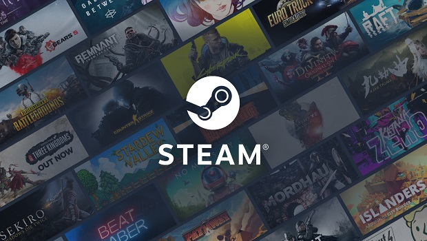

Anii 2000-2010
Anii 2000 au avut inovații atât pe console, cât și pe PC-uri și o piață din ce în ce mai competitivă pentru sistemele de jocuri portabile. Impactul disponibilității mai largi a internetului a dus la noi schimbări ale gameplay-ului, schimbări în hardware-ul pentru jocuri și introducerea serviciilor online pentru console.
Fenomenele de modificări ale jocurilor video create de utilizatori (denumite în mod obișnuit „moduri”) pentru jocuri, o tendință care a început în timpul erei Wolfenstein 3D și Doom, a continuat până la începutul secolului 21. Cel mai faimos exemplu este cel al lui Counter-Strike; lansat în 1999, este încă unul dintre cele mai populare first-person shooter online, chiar dacă a fost creat ca mod pentru Half-Life de doi programatori independenți. În cele din urmă, designerii de jocuri și-au dat seama de potențialul modurilor și al conținutului personalizat în general de a spori valoarea jocurilor lor și astfel au început să încurajeze crearea acestora. Câteva exemple în acest sens includ Unreal Tournament, care le-a permis jucătorilor să importe scene 3dsmax pentru a le folosi ca modele de personaje și The Sims a lui Maxis, pentru care jucătorii puteau crea obiecte personalizate.
Peisajul schimbător al consolei de casă
Dominația Sony pe piața consolelor la începutul anilor 2000 a provocat o schimbare majoră pe piață. Sega a încercat încă o incursiune în hardware-ul consolei cu Dreamcast în 1998, în special prima consolă cu o conexiune la internet încorporată pentru jocul online. Cu toate acestea, reputația Sega a fost pătată de Saturn, iar Sony a anunțat recent viitoarea PlayStation 2. Sega a părăsit piața consolelor hardware după Dreamcast, deși a rămas în dezvoltarea jocurilor arcade, precum și în dezvoltarea de jocuri pentru console.
Sony a lansat PlayStation 2 (PS2) în 2000, prima consolă care acceptă noul format DVD și cu capabilități de a reda discuri de film DVD și discuri audio CD, precum și de a juca jocuri PlayStation într-un mod compatibil cu versiunea anterioară alături de jocurile PS2. Nintendo a urmat cu GameCube în 2001, prima sa consolă care a folosit discuri optice, deși format special pentru sistem. Cu toate acestea, un nou jucător a intrat în imaginea consolei în acest moment, Microsoft cu prima sa consolă Xbox, lansată tot în 2001. Microsoft se temea că PS2 de la Sony va depăși computerul personal ca punct central de divertisment în camera de zi și după ce Dezvoltarea recentă a setului de biblioteci DirectX pentru a standardiza interfețele hardware de joc pentru computerele bazate pe Windows, a folosit aceeași abordare pentru a crea Xbox.
 |
La mijlocul anilor 2000, doar Sony, Nintendo și Microsoft erau considerați jucători importanți în spațiul hardware al consolei. Toți trei și-au prezentat următoarea generație de hardware între 2005 și 2006, începând cu Xbox 360 de la Microsoft în 2005 și PlayStation 3 (PS3) de la Sony în 2006, urmată de Wii de la Nintendo mai târziu în acel an. Xbox 360 și PS3 au arătat o convergență cu hardware-ul computerului personal: ambele console au fost livrate cu suport pentru grafică de înaltă definiție, suporturi optice de densitate mai mare, cum ar fi Blu-ray-urile, hard disk-uri interne pentru stocarea jocurilor și au avut încorporată conexiune la internet. Microsoft și Sony au dezvoltat, de asemenea, servicii digitale online, Xbox Live și PlayStation Network, care i-au ajutat pe jucători să se conecteze cu prietenii online, să se potrivească pentru jocuri online și să cumpere noi jocuri și conținut din magazinele online.
Un schimbare majoră în anii 2000 a fost creșterea și scăderea rapidă a jocurilor de ritm care folosesc controlere speciale de joc în formă de instrumente muzicale, cum ar fi chitare și tobe, pentru a se potrivi notele în timp ce cântau melodii licențiate. Guitar Hero, bazat pe jocul arcade Guitar Freaks, a fost dezvoltat de Harmonix și publicat de Red Octane în 2005 pe PS2 și a avut un succes modest. Activision a achiziționat Red Octane și a câștigat drepturile de publicare a serialului, în timp ce Harmonix a fost achiziționat de Viacom, unde au lansat Rock Band, o serie similară, dar adăugând tobe și voce peste chitare
|  |
MMO-uri, esports și servicii online
Pe măsură ce conexiunea la internet în bandă largă și la prețuri accesibile s-a răspândit, mulți editori au apelat la jocurile online ca o modalitate de a inova. Jocurile roleplay online masiv multiplayer (MMORPG-uri) au prezentat jocuri importante pentru computer precum RuneScape, EverQuest și Ultima Online, World of Warcraft fiind unul dintre cele mai de succes. Au fost lansate și alte jocuri online multiplayer la scară largă, cum ar fi Second Life, care s-a concentrat mai ales pe interacțiunile sociale cu avatarele jucătorilor virtuali și creațiile utilizatorilor, mai degrabă decât pe orice elemente de joc.
Primele competiții majore de esports au început și ele în anii 2000. În timp ce Street Fighter II și alte jocuri de luptă din anii 1990 introduseseră competiții organizate de jocuri video mai devreme, sporturile profesionale au apărut din Coreea de Sud în jurul anului 2000, multe dintre evenimentele lor fiind în jurul jocurilor de luptă actuale și diferitelor jocuri RTS precum StarCraft și WarCraft III. Până în 2010, au fost stabilite numeroase turnee internaționale de sporturi în diferite genuri de jocuri.
Jocuri sociale, casual, și browser
La sfârșitul anilor 1990 și începutul anilor 2000, accesibilitatea la internet și noile tehnologii online au înflorit, precum Java și Adobe Flash. Deși Adobe Flash a fost inițial destinat să fie un instrument de dezvoltare a site-urilor web complet interactive, Flash și-a pierdut favoarea în acest domeniu, dar dezvoltatorii independenți au găsit modalități de a utiliza instrumentul pentru animații și jocuri, ajutați de ușurința instrumentelor de dezvoltare în acest scop. Site-ul Newgrounds a fost creat pentru a ajuta oamenii să-și împărtășească și să-și promoveze lucrările Flash. Deși acestor jocuri Flash le lipsește complexitatea jocului de pe console sau computere, acestea au fost disponibile gratuit și au generat idei creative care ar putea continua; de exemplu, Crush the Castle a inspirat direct popularul joc mobil Angry Birds.
Pe măsură ce site-urile de social media au început să crească, primele jocuri de rețele sociale au apărut pe platformele sociale. Aceste jocuri, adesea bazate pe mecanica ocazională a jocului, se bazează de obicei pe utilizatorii pentru a interacționa cu prietenii lor prin intermediul site-ului de socializare pentru a obține o formă de „energie” pentru a continua să se joace. Happy Farm, lansat în China în 2008, este considerat primul astfel de joc social major. Influențat de seria RPG de consolă japoneză Story of Seasons, Happy Farm a atras 23 de milioane de utilizatori activi zilnic în China. Curând a inspirat multe clone precum Sunshine Farm, Happy Farmer, Happy Fishpond, Happy Pig Farm, și jocuri pe Facebook precum FarmVille, Farm Town, Country Story, Barn Buddy, Sunshine Ranch, Happy Harvest, Jungle Extreme și Farm Villain. Happy Farm a servit drept inspirație directă pentru FarmVille, care a avut peste 80 de milioane de utilizatori activi în întreaga lume până în 2010.
Industria jocurilor video AAA (triple A)
Jocurile video au început să înregistreze bugete tot mai mari pentru dezvoltare începând cu anii 2000; Final Fantasy VII a avut un buget estimat de 40-45 de milioane de dolari, excluzând marketingul, în timp ce primul joc Shenmue a fost estimat la 47-70 de milioane de dolari. Dezvoltatorii mai mari au început să abordeze jocuri comparabile cu filmele de la Hollywood, nu doar luând în considerare aspectele de dezvoltare, distribuție și marketing, ci și încorporând bugete atât pentru cinematografia în joc, inclusiv actori profesioniști și proprietăți licențiate, cât și elemente promoționale mai mari. Aceste noi abordări au extins și mai mult bugetele jocului. Similar cu filmele de succes, industria jocurilor video a început să numească aceste jocuri cu buget mare și editorii și dezvoltatorii din spatele lor drept „AAA” sau „triple A” până la sfârșitul anilor 1990 și începutul anilor 2000.
Ca urmare a bugetelor mai mari și a tehnologiei mai bune, au apărut noi jocuri bazate pe narațiuni pentru a încorpora povești mai mari ca componente mai directe ale jocului, cum ar fi prin eliminarea scenelor tăiate pre-rendate în favoarea scenelor realizate în motorul jocului. Încorporarea narațiunii în jocurile de acțiune a dus parțial la scăderea genului jocurilor de aventură la începutul anilor 2000. Exemple de jocuri influente din această perioadă includ Half-Life 2, Portal, Batman: Arkham Asylum, Bioshock, Metal Gear Solid 2 și Resident Evil 4, precum și primele intrări din serialul de lungă durată Call of Duty. și Assassin's Creed.
Apariția jocurilor indie
Jocurile independente sau jocurile indie au câștigat o cotă semnificativă de piață în a doua jumătate a anilor 2000, care a continuat până în anii 2010 și, în general, văzute ca rezultat al industriei în căutarea inovației dincolo de abordările sigure și non-riscante pe care le-au dezvoltat AAA. Interesul pentru jocurile indie a crescut din industria jocurilor Flash în plină expansiune de la mijlocul anilor 2000, care a atras atenția asupra dezvoltatorilor individuali și mici, în mod normal trecute cu vederea de către mass-media.
Crowdfunding prin site-uri precum Kickstarter a devenit o cale viabilă pentru dezvoltatorii indie de a obține finanțare la sfârșitul anilor 2000, crescând exploziv în popularitate la mijlocul anilor 2010, în timp ce distribuția cu acces timpuriu (early-acces), în care jucătorii achiziționează o versiune care nu este încă finală a unui joc pentru a ajuta la joc, la testare și la furnizarea de feedback, a fost demonstrat cu succes cu Minecraft în 2009 și folosit ca model pentru unele jocuri indie de atunci. Pe computerele personale, Valve și-a deschis platforma de conținut digital Steam pentru a permite ca jocurile independente să fie listate alături de jocuri triple-A și alte câteva vitrine digitale similare. Microsoft a lansat Xbox Live Arcade (XBLA) în 2004, pe care l-a folosit pentru a publica jocuri pentru Xbox și mai târziu pentru Xbox 360 de la editori mai mici și echipe independente. Sony și Nintendo au urmat exemplul cu programe similare de publicare a jocurilor independente la începutul anilor 2010. Mai multe jocuri indie au câștigat atenția media în această perioadă, inclusiv Super Meat Boy, Fez și Braid.
|  |
|  |